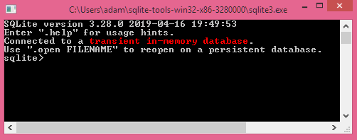

Copyright © 2020 Andras T. Papp
ISBN-10: 1652710019
ISBN-13: 978-1652710011
Printed copies of the book can be purchased on Amazon:
https://www.amazon.com/dp/1652710019
Buy on Amazon
This book is intended to be concise and to the point. The Structured Query Language (SQL) is fairly straight forward. At the same time, seemingly simple search queries can be difficult to formulate in terms of SQL. It is not enough to read about the language, it has to be practiced so that you start thinking in the structure of SQL. It is important to try the examples in the book. Results of SQL statements can be more readily grasped when the entirety of the dataset can be conceptualized. Moreover, the relational aspect of databases are more easily understood when you have to create the linkages between tables and data yourself. To that end, the examples in the book are run on a small set of data using SQLite. Everything is done from scratch including table creation and data entry.
All resources needed for this book are freely available on the internet. You can download SQLite from its website: https://sqlite.org/download.html
Download the file for your platform that begins with sqlite-tools-, as that includes a shell program that does not require installation. On Windows after unzipping the file you can just double-click on sqlite3.exe and it will bring up the SQLite shell.

The website for the book also contains a web version of SQLite with a built in database that contains all the tables and data used in the book: https://zero-to-hero-books.github.io/books/
This SQL prompt is a full featured web version SQLite compiled to asm.js. You can run the code in the book and experiment with SQL without having to install any database software. Note that changes to the tables will not be saved. Reloading the page reloads the original tables from Chapter 2.
As the title of the book states, we will be starting from absolute zero. If you are just starting to learn SQL, then this book is for you. However, even if you are familiar with SQL I would still recommend reading the book from start to finish. Most books and tutorials start with searching for a specific set of records in a table, and then try to tack on querying multiple tables. That is not "thinking in terms of SQL." In relational databases information is divided into tables to reduce duplicate / redundant data. Hence, querying a database almost always involves data from multiple connected tables. How to connect / join tables when querying is introduced as early on as possible, and most of the examples in the book use multiple tables at a time. The chapters are meant to be read sequentially, and each chapter builds on the previous.
This book is meant to teach the SQL language and its usage from the end user perspective. Aspects of SQL that facilitate database administration and security such as access controls, roles, views, stored procedures and triggers are not covered.
Consider a global bank with ten million accounts with five transactions per account per day on average. That is 50 million transactions records per day. In addition to the transactions table the account balance table has to be updated as well as the loan table, the mortgage table, the credit card table and so forth. All of the data tables are linked in one way or another. This data not only has to be stored, it has to be searchable and both storage and query operations have to be fast. Accountants have to query and summarize all of this data, while fraud investigators have to be able to process this data to find possible patterns that may indicate fraud. Clearly, a spreadsheet won't cut it. Database Management Systems (DBMS) are optimized to store, update and search large amounts of data. SQL, the Structured Query Language, is a standardized method of interacting with the databases of various DBMS vendors. While not all databases support every aspect of SQL, the core features of the language are supported by all vendors. Moreover, DBMS vendors implement functions and extensions that are unique to their product. In this book we will cover the core SQL that is support by all databases. Once you have a proper foundation in SQL and how to use it, you can read up on the additional functions and features that your specific database offers.
Databases aren't just for banks or extremely large amounts of data; they are useful for analysis of any set of data tables that have relational data, regardless of size. Let's look at how a spreadsheet program stores data and compare it to a relational database. In a spreadsheet program multiple spreadsheets are part of a workbook. The spreadsheets contain the tabular data and can contain references to other spreadsheets in the workbook. The workbook itself does not contain data, it contains the spreadsheets with the data. Similarly, a database contains tables, which contain the tabular data. These tables will have columns that link one table to another, thereby defining a relationship between the data.
In a spreadsheet we specify exactly which row and column a value should be stored in. However, we do not know how a database internally organizes the storage of data. It is more than likely that the order in which we enter records is not the order that they will be stored in. While a spreadsheet considers each field independent and identifies fields using a row / column index, a database treats a row of data as a single record. When we insert data into a database table we don't insert fields, rather we insert (or update) an entire row. When we retrieve the data we don't specify the row / column index, instead we submit a query to the database which returns a set of records. Database tables do contain an index which uniquely identifies a record, called the primary key. Thus, individual records can be retrieved. However, the key feature of databases is the ability to run complex search queries.
A spreadsheet allows you to enter any kind of data into any field, and the program determines the type of data based on the content. A column in a spreadsheet can contain text in one row and a number in another. In databases the type of data that a column contains is defined when the table is created. If a column is to contain only numbers, for example, and the data type of the column is defined as an integer, then the database will only accept integer numbers in that column. While a spreadsheet is a collection of cells / fields, a database should be thought of as columns of data.
To demonstrate the usage of SQL we will be creating a database for a library borrowing system. This database will only contain a small number or records, specifically the following 12 books:
We interact with a database by submitting statements to the Database Management System. Before we can create tables to store our data, we need a database. (The introduction of the book has details on where to download the SQLite shell.) To create the database use the .open command at the SQLite prompt: .open library.db
Note that the open command is not an SQL statement, it is a command for the SQLite shell program. It opens the database file named library.db. If the library.db file does not exist, then it is created. You might want to use a full pathname to ensure that the file is in the directory that you want it created in. Use forward-slashes as the directory separator character. For example, use C:/work/library.db, instead of C:\work\library.db.
If you are using the web version on the books website, https://zero-to-hero-books.github.io/books/, then the built-in database already contains all the tables and data used in the book.
Our database will need four tables. There will need to be a table for the catalog of books. We want to avoid repeating the names of the authors over and over in the books table, so we will create a separate table to store the data on authors, assigning a unique ID for each author. Since our table of books will reference the author IDs in the authors table, we will need to create the table of authors first. Our library will need a table for membership, as well as a table to store the data on which books have been borrowed and by whom. Since the table that contains the data for checked out books will need to reference both the table of books and the table of membership, it will have to be created last.
Now that we have our database we can create our tables using the create table SQL statement. The books in our library catalog will be stored in the Books table. As you can see above the data has multiple books from the same author. To avoid data entry errors and to facilitate search based on author name, we are going to create a table to store authors separately from the table of books. While our dataset does not contain different authors with the same name, a large collection of books probably will. The Authors table would be used to store additional information, such as authors’ date of birth, without having to duplicate the data in the books table.
| Authors |
|---|
| id (integer) |
| surname (text) |
| givennames (text) |
The SQL statement syntax consists of the create table keywords, followed by the table name, followed by the list of column definitions in parentheses. Column definitions are separated by commas:
| SQL statement |
|---|
create table Authors( |
id integer primary key not null, |
surname text not null, |
givennames text |
); |
SQL statements are not case sensitive, but table and column names are. SQL treats line breaks as any other whitespace. The end of the statement is the semi-colon. Thus, you can format statements to aid readability. The above SQL statement created the table Authors with three columns: id, surname and givennames. Each column is defined by the column name, followed by the data type and additional options. The data type for id is set as an integer number, while both the surname and givennames columns are text.
Both the id and the surname column have the not null combination of keywords. This means that when we add a record to the Authors table it must have an ID number and must have a surname. The givennames column on the other hand does not have to contain a value. For example, Plato or Socrates would have a surname, but a null for givennames. Note that null is the complete absence of a value. It is not the same as an empty/zero length text.
The index for a table that uniquely identifies records is called the primary key. In the Authors table we declared the id column as the primary key column using the primary key combination of keywords. Unlike most programming languages SQL looks very much like free flowing English, but the order and combination of keywords matters. You can switch up primary key and not null, but the column definition must begin with the column name and must be followed by the data type.
Now that we have our Authors table let's proceed and enter the data. The primary key column has to contain unique integer numbers, so we will make up IDs for the authors as we enter the data. To add a record to a table we use the insert into statement, which is followed by the table name, the values keyword and the list of values for each column in the database, separated by commas:
| SQL statement |
|---|
insert into Authors values(1, 'Jane', 'Austen'); |
Press enter to execute the statement and insert the next record:
| SQL statement |
|---|
insert into Authors values(1, 'Caroll', 'Lewis'); |
| Output |
|---|
| Error: UNIQUE constraint failed: Authors.id |
The Authors.id column is the primary key column of the table. It must have a unique value. Let's try again, this time with a unique value for the id column.
| SQL statement |
|---|
insert into Authors values(2, 'Caroll', 'Lewis'); |
Note that text has to be between either single quotes or double quotes. Also note that we made an error. When creating the table the order of the columns was id, surname and then givennames. The insert into statement adds data in the order that it appears. Thus, "Jane" went into the surname column, while "Austen" was added to the givennames column. We have two options at this point, we can either delete the record and insert into the table again, or we can update the record. Let's update the record using the update statement. It consists of the update keyword, followed by the table name and the set clause. The set clause specifies which columns to change, and to what values:
| SQL statement |
|---|
update Authors |
set surname='Austen', givennames='Jane'; |
Notice how column / value pairs are separated by a comma. Did you try it? You should, databases do not have an undo button; it is better to experiment now and make mistakes on this example data set then to permanently overwrite every value in a production database.
A relational database is a collection of columns, and SQL statements operate on columns. Let’s see what the update statement did. Type in the following statement to query all columns in the table (the statement will be explained in the next chapter.)
| SQL statement |
|---|
select * from Authors; |
| Output |
|---|
| 1|Austen|Jane |
| 2|Austen|Jane |
If the update statement does not have a where clause, all rows in the table are modified by the update. Otherwise, the update affects only those rows for which the where clause is true. Let’s update the record with id=2 so that it is "Lewis Caroll" again:
| SQL statement |
|---|
update Authors |
set surname='Caroll', givennames='Lewis' |
where id=2; |
|
To minimize data entry errors it is good practice to always specify the columns for the data in the insert into statement. Column names can be specified after the table name in parentheses. They don't have to be in the same order as in the create table statement. Data in the values list will be inserted in the same order that the columns are specified in. Let's complete the data entry for our Authors table:
| SQL statement |
|---|
insert into Authors(id, givennames, surname) values(3, 'Arthur Conan', 'Doyle'); |
insert into Authors(id, givennames, surname) values(4, 'Charles', 'Dickens'); |
insert into Authors(id, givennames, surname) values(5, 'Bram', 'Stoker'); |
insert into Authors(id, givennames, surname) values(6, 'Mark', 'Twain'); |
insert into Authors(id, givennames, surname) values(7, 'Robert Louis', 'Stevenson'); |
To demonstrate the delete statement let's insert into the Authors table two records with no givennames:
| SQL statement |
|---|
insert into Authors(id, surname) values(8, 'Plato'); |
insert into Authors(id, surname) values(9, 'Socrates'); |
|
The above insert into statement is allowed by the database, because the givennames column was not explicitly specified as not null. We can check the results with:
| SQL statement |
|---|
select * from Authors; |
| Output |
|---|
| 1|Austen|Jane |
| 2|Caroll|Lewis |
| 3|Doyle|Arthur Conan |
| 4|Dickens|Charles |
| 5|Stoker|Bram |
| 6|Twain|Mark |
| 7|Stevenson|Robert Louis |
| 8|Plato| |
| 9|Socrates| |
We will now delete the two extra rows using the delete from statement. We could delete them individually using the id:
| SQL statement |
|---|
delete from Authors where id=8; |
delete from Authors where id=9; |
Alternatively, we could delete from the table based on the surname values:
| SQL statement |
|---|
delete from Authors where surname='Plato'; |
delete from Authors where surname='Socrates'; |
However, what we really want is to delete from the table all records where there is no value for the givennames column:
| SQL statement |
|---|
delete from Authors where givennames is null; |
Notice how when working with values we use the equals sign to check equality, regardless of whether we are comparing numbers or text. However, when working with null we use the is and the not operators. Null means the absence of a value. For example, if we wanted to delete all records where the givennames column has a value, we would use:
| SQL statement |
|---|
delete from Authors where givennames is not null; |
If you try the above statement then you will have to insert into the table all records again.
Now that we have our Authors table the database can retrieve author names based on id very quickly, because the table is sorted by primary key. However, if we wish to search for authors based on the surname, given names or both, then the database will have to compare every single record in the table to the search criteria. Databases are very fast, so this will not result in a noticeable difference for a library of physical books. However, for a digital library that contains not just books, but say the library of congress and scientific journals of every discipline, comparing every record will be inefficient. Sorting the entries based on the primary key alone is not enough. We need to have the authors sorted by either surname, or both the surname and givennames. This can be done using an index. A table index maintains a sort order based on column(s) other than the primary key column. (Tables are always sorted based on the primary key column.) The create index statement looks similar to the create table statement. After the create index keywords comes the index name, followed by the on keyword, followed by the table name for which the index is to be created. The columns that the index should be sorted on are listed in parentheses after the table name. You can have an index sorted on one column or a combination of columns, separated by commas. Let’s create the index:
| SQL statement |
|---|
create index Authorname on Authors(surname, givennames); |
| Books |
|---|
| isbn (text) |
| title (text) |
| authorid (integer) |
| count (integer) |
Now that we have our Authors table we can create our Books table. The primary key for the Books table will be the books' ISBN. The International Standard Book Number (ISBN) is a numeric commercial book identifier which is unique. Since some ISBN numbers start with zero we will have to create the ISBN column as a text column. If we created it as an integer column it would remove any leading zeros. Our table will need the book titles, the number of copies of the book that the library has, as well as the author IDs from the Authors table. It is possible to have two different ISBNs for the same title from the same author. ISBNs are linked to a publisher and historically paperbacks and hardbacks were issued by different publishers. However, in our example library we will require that each book have a unique title. This is accomplished with the unique keyword. Thus, two books with the same title cannot be included, even if they have different ISBNs.
| SQL statement |
|---|
create table Books( |
isbn text primary key not null, |
title text not null unique collate nocase, |
authorid integer not null, |
count integer default 1 check(count > 0), |
foreign key(authorid) references Authors(id) |
); |
In addition to the unique constraint the title column also has the collate nocase combination of keywords. This ensures that sorting and comparisons on the column are case insensitive. (Collation, which just means sort order, is quite an involved topic and databases support a variety of collation options based on language and locale. The collation names differ between database vendors unfortunately. The nocase collation name is specific to SQLite.)
For our database to work as intended there must be referential integrity between the Authors table and the Books table, which means that the author IDs in the Books table must be restricted to values that are in the Authors table. This is achieved with a foreign key. A foreign key in one table refers to a primary key in another. Some databases include the foreign key constraint with the column definition the same way as you would the primary key, while others (including SQLite) require that the constraint definition be specified after the columns. The syntax for foreign keys differs slightly between databases, but the concept is exactly the same. Above we specified that the authorid column must reference a value in the id column of the Authors table by placing the foreign key constraint after the column definitions:
foreign key(authorid) references Authors(id)
Just as tables have names and indexes have names, constraints can also be named. This allows for altering or removing the constraint by name after table creation. A named constraint is created using the constraint keyword, followed by the name of the constraint, followed by the constraint definition as before. For example, if we wanted to name the foreign key constraint authoreid_key, then we would use the following syntax:
constraint authoreid_key foreign key (authorid) references Authors(id)
The count column contains the number of copies that the library has. Instead of creating the column with the not null keywords, we specified a default value with the default keyword. Our library will have one copy of most books, so unless there are multiple copies a book's data can be inserted into the table without having to specify the copy count. Also notice that we included something called a check constraint. Each time we insert or update a record in the Books table the database will check to make sure that the count value is greater than zero. Just like the foreign key constraint check constraints can be included after the column definitions as well. We could have written the above create table statement as follows:
| SQL statement |
|---|
create table Books( |
isbn text primary key not null, |
title text not null unique collate nocase, |
authorid integer not null, |
count integer default 1, |
foreign key(authorid) references Authors(id), |
check(count > 0) |
); |
The constraint keyword can also be used in the column definitions to specify names for constraints. For example, we could name our check constraint as count_chk, the unique constraint as title_unique and the default constraint as count_def as follows:
| SQL statement |
|---|
create table Books( |
isbn text primary key not null, |
title text not null constraint title_unique unique collate nocase, |
authorid integer not null, |
count integer constraint count_def default 1 constraint count_chk check(count > 0), |
foreign key (authorid) references Authors(id) |
); |
Now that we have our Books table set up, let's populate it with our list of books. Note that for the second statment below we need to double up the single quotation mark, otherwise the database would think that the text ends at "Alice" instead of the full title. Alternatively we could use double quotes, e.g.: "Alice's Adventures in Wonderland." For most of the books we left out the count column, which means that the count will be the default value of 1 specified in the create table statement.
| SQL statement |
|---|
insert into Books(title, authorid, isbn, count) values('Pride and Prejudice', 1, '0141439513', 2); |
insert into Books(title, authorid, isbn) values('Alice''s Adventures in Wonderland', 2, '0147515874'); |
insert into Books(title, authorid, isbn, count) values('The Adventures of Sherlock Holmes', 3, '3958700152', 3); |
insert into Books(title, authorid, isbn) values('A Study in Scarlet', 3, '1514698854'); |
insert into Books(title, authorid, isbn) values('The Sign of the Four', 3, '1523855789'); |
insert into Books(title, authorid, isbn, count) values('The Lost World', 3, '1945644621', 3); |
insert into Books(title, authorid, isbn) values('A Tale of Two Cities', 4, '0486406510'); |
insert into Books(title, authorid, isbn, count) values('Dracula', 5, '0486454016', 4); |
insert into Books(title, authorid, isbn) values('The Adventures of Tom Sawyer', 6, '1976319161'); |
insert into Books(title, authorid, isbn) values('The Prince and the Pauper', 6, '0199539278'); |
insert into Books(title, authorid, isbn) values('Adventures of Huckleberry Finn', 6, '0486280615'); |
insert into Books(title, authorid, isbn) values('The Strange Case of Dr. Jekyll and Mr. Hyde', 7, '0199536228'); |
We have two tables left to create, a table for our library members which we will call Members and the Checkedout table which will contain the records of borrowed books. In our Members table we do not split up the member names into surname and given names.
| Members |
|---|
| id (integer) |
| name (text) |
In a real library membership records include either a phone number and address or a student ID as distinctive identification of an individual. The exact name of members is not all that important to a library. To keep our example simple we will only include an id and a name column, and have only three members for our library.
| SQL statement |
|---|
create table Members( |
id integer primary key not null, |
name text not null |
); |
| SQL statement |
|---|
insert into Members values(123, 'John Doe'); |
insert into Members values(124, 'Jane Wilkinson'); |
insert into Members values(125, 'James Jones'); |
In our library we will restrict members to borrowing only one copy of a book at a time. When a book is checked out there are two data points that uniquely identify the transaction: the book's ISBN and the borrower's membership id.
| Checkedout |
|---|
| memberid (integer) |
| isbn (text) |
| checkoutdate (text) |
Up until now we have been specifying a single column as a primary key. Ideally we would like to use the combination of ISBN and membership ID as a primary key, and not have to create a separate ID column for the Checkedout table. We can specify a composite primary key in much the same way as we did with the foreign key, by placing the declaration after the list of columns:
| SQL statement |
|---|
create table Checkedout( |
memberid integer not null, |
isbn text not null, |
checkoutdate text not null, |
foreign key(memberid) references Members(id), |
foreign key(isbn) references Books(isbn), |
primary key(memberid, isbn) |
); |
When someone borrows a book we record the person's member ID and the book's ISBN. We also record the date when it was borrowed in the checkoutdate column. If a person borrows more than one book, then there will need to be a record for each book borrowed. Since we will be working with these tables in the following chapters we will need to insert a few records into the Checkedout table:
| SQL statement |
|---|
insert into Checkedout values(123, '0141439513', '2018-03-21'); |
insert into Checkedout values(123, '0147515874', '2018-03-19'); |
insert into Checkedout values(123, '3958700152', '2018-03-01'); |
|
insert into Checkedout values(125, '3958700152', '2018-03-05'); |
insert into Checkedout values(125, '1514698854', '2018-03-05'); |
insert into Checkedout values(125, '1976319161', '2018-03-18'); |
insert into Checkedout values(125, '0199539278', '2018-03-18'); |
So far we have discussed creating tables and indexes. There are only two types of operations left, altering the table definition and constraints after creation, and deleting tables and indexes. We will not be discussing table operations in this chapter for two reasons: Databases implement altering tables slightly differently and SQLite does not support all operations anyway. In addition, databases’ table specifications are not meant to be changed willy-nilly. (That being said, the 'Table operations' chapter discusses the available statements.) Proper design and planning should eliminate any need to change the structure after creation. The following database design principles should be followed:
Reexamine the tables that we created with these principles in mind.
Notice how in our Checkedout table we used text as the data type for the checkout date. This is because SQLite does not have an explicit date data type. Other databases do. There is little consistency between the data types of various databases. To make matters worse, the data types may be defined differently, despite having the same name. For example, string (which means text) can be stored as a char(size), varchar(size), text or nchar(size) depending on which database you are using. Numbers can be stored as bit, int, bigint, float, real etc. depending on the database. Microsoft SQL Server offers 12 different data types for storing strings, 11 data types for storing numbers, and 7 data types for storing dates and times. MySQL offers 14 different data types for strings, 15 for numbers and 5 for dates and times. There is no way around it, the documentation of a database has to be read to make sure you are using the correct data types. When you are dealing with large volumes of data, the size of text fields and numbers matters both in terms of storage and performance. For our purposes it does not. SQLite is used in this book not just because you can experiment with it on your own computer easily, but also because it offers simplicity in terms of data types.
While a spreadsheet is a collection of cells / fields, a database should be thought of as columns of data. When querying a database the first thing the database needs to know is which columns you are interested in and in which tables. Since databases operate in terms of columns the query results will be columns of data. The database can filter the results so that only the records we are interested in are returned, but all query statements start with a list of columns to fetch. Most books and tutorials start with searching for a specific set of records in a table, and then try to tack on querying multiple tables. That is not "thinking in terms of SQL." As we saw in the previous chapter a fundamental design principle of relational databases is that information is divided into tables to reduce duplicate / redundant data. Hence, querying a database almost always involves data from multiple connected tables. We will filter / search for a specific set of records in the following chapters, but in this chapter we are going to concentrate on how to connect / join tables when querying a database.
All query operations are done with the select statement. A select statement can be quite complex with clauses for filtering, sorting and grouping data, but before that can happen we need to specify which columns to retrieve and from which tables. In the previous chapter we saw how to retrieve all data from a table with the following statement:
| SQL statement |
|---|
select * from Authors; |
The asterisk is used to signify that we want all columns from the Authors table. Every select statement starts with the select keyword, a comma separated list of columns followed by the from keyword and the table name. Suppose we are interested in the names of authors in our table, but not the IDs. We can retrieve the list using:
| SQL statement |
|---|
select givennames, surname from Authors; |
| Output |
|---|
| Jane|Austen |
| Lewis|Caroll |
| Arthur Conan|Doyle |
| Charles|Dickens |
| Bram|Stoker |
| Mark|Twain |
| Robert Louis|Stevenson |
The retrieved data columns will be in the order listed in our select statement. If we want surname to appear first, then we would write:
| SQL statement |
|---|
select surname, givennames from Authors; |
| Output |
|---|
| Austen|Jane |
| Caroll|Lewis |
| Doyle|Arthur Conan |
| Dickens|Charles |
| Stoker|Bram |
| Twain|Mark |
| Stevenson|Robert Louis |
To list all book ISBNs that are currently checked out, we would write:
| SQL statement |
|---|
select isbn from Checkedout; |
| Output |
|---|
| 0141439513 |
| 0147515874 |
| 3958700152 |
| 0199539278 |
| 1514698854 |
| 1976319161 |
| 3958700152 |
As you can see ISBN 3958700152 appears twice, since two copies were borrowed. To get a list without duplicates, we can use the distinct keyword after the select keyword:
| SQL statement |
|---|
select distinct isbn from Checkedout; |
| Output |
|---|
| 0141439513 |
| 0147515874 |
| 3958700152 |
| 0199539278 |
| 1514698854 |
| 1976319161 |
However, the distinct keyword has a drawback. It is applied to the combination of all columns listed in the select statement, and cannot be applied to only a subset of columns. If we were to list all isbn numbers along with the borrower's memberid, then the combination of the two columns would need to be distinct.
| SQL statement |
|---|
select distinct memberid, isbn from Checkedout; |
| Output |
|---|
| 123|0141439513 |
| 123|0147515874 |
| 123|3958700152 |
| 125|0199539278 |
| 125|1514698854 |
| 125|1976319161 |
| 125|3958700152 |
As you can see ISBN 3958700152 appears twice again.
Our Checkedout table records ISBN and the membership ID for each book borrowed. If we want the borrower's name instead of the ID, then we need to combine the Checkedout table with the Members table. It would be reasonable to assume that listing both tables in the from clause would yield the desired results. After all, the memberid column in the Checkedout table references the id column in the Members table. This should work:
| SQL statement |
|---|
select isbn, name from Checkedout, Members; |
| Output |
|---|
| 0141439513|John Doe |
| 0147515874|John Doe |
| 3958700152|John Doe |
| 0199539278|John Doe |
| 1514698854|John Doe |
| 1976319161|John Doe |
| 3958700152|John Doe |
| 0141439513|Jane Wilkinson |
| 0147515874|Jane Wilkinson |
| 3958700152|Jane Wilkinson |
| 0199539278|Jane Wilkinson |
| 1514698854|Jane Wilkinson |
| 1976319161|Jane Wilkinson |
| 3958700152|Jane Wilkinson |
| 0141439513|James Jones |
| 0147515874|James Jones |
| 3958700152|James Jones |
| 0199539278|James Jones |
| 1514698854|James Jones |
| 1976319161|James Jones |
| 3958700152|James Jones |
As you can see the database matched up every record in Checkedout with every record in Members, regardless of whether or not the member ID matched. This is referred to as a cross join, and is not what we want most of the time. You could filter the results afterwards to only include the rows for which the IDs match, but that is inefficient and unnecessary. Consider the hypothetical bank example in chapter 1. If you wanted to generate a monthly statement of transactions for an account by filtering a cross join, then the database would need to create a temporary table consisting of 10 million accounts by 50 million transactions per day by 30 days of data, and filter all of that to find the records of a single account.
For the database to match up records we need to explicitly join the two tables based on a join criterion. There are two types of joins: inner joins and outer joins. Inner joins only return records for which there was a successful match, while outer joins return all records from one table and match up the records from the other table where applicable.
Let's combine the Checkedout table with the Members table to get the borrower's name instead of the ID using an inner join. The match criterion is specified after the on keyword:
| SQL statement |
|---|
select isbn, name from Checkedout inner join Members on memberid=id; |
| Output |
|---|
| 0141439513|John Doe |
| 0147515874|John Doe |
| 3958700152|John Doe |
| 0199539278|James Jones |
| 1514698854|James Jones |
| 1976319161|James Jones |
| 3958700152|James Jones |
You can have multiple joins, one after another. The database will create the first join, then use the results in the next join. For example, if we wanted to retrieve the book titles instead of the ISBNs, then we could use the following two inner joins:
| SQL statement |
|---|
select name, title from Checkedout inner join Members on memberid=id inner join Books on Books.isbn=Checkedout.isbn; |
| Output |
|---|
| John Doe|Pride and Prejudice |
| John Doe|Alice's Adventures in Wonderland |
| John Doe|The Adventures of Sherlock Holmes |
| James Jones|The Prince and the Pauper |
| James Jones|A Study in Scarlet |
| James Jones|The Adventures of Tom Sawyer |
| James Jones|The Adventures of Sherlock Holmes |
Notice how we had to specify the table name for the isbn columns in the second inner join: Books.isbn=Checkedout.isbn
Since the isbn column name is used in both tables the database has no way of determining which columns we are referring to without the fully qualified name.
In the above example the database returned a list of all members that had entries in the Checkedout table. However, if we want to list all members even if they have no checked out books, then we need to use an outer join. An outer join can be specified with the keywords left outer join, right outer join or full outer join.
| SQL statement |
|---|
select name, isbn from Members left outer join Checkedout on memberid=id; |
| Output |
|---|
| John Doe|0141439513 |
| John Doe|0147515874 |
| John Doe|3958700152 |
| Jane Wilkinson| |
| James Jones|0199539278 |
| James Jones|1514698854 |
| James Jones|1976319161 |
| James Jones|3958700152 |
We have all members listed and the ISBN of the books that they borrowed. For Jane Wilkinson the ISBN is null, that is to say the absence of a value. Now we can match up the book titles to the ISBNs:
| SQL statement |
|---|
select name, title from Members left outer join Checkedout on memberid=id inner join Books on Books.isbn=Checkedout.isbn; |
| Output |
|---|
| John Doe|Pride and Prejudice |
| John Doe|Alice's Adventures in Wonderland |
| John Doe|The Adventures of Sherlock Holmes |
| James Jones|The Prince and the Pauper |
| James Jones|A Study in Scarlet |
| James Jones|The Adventures of Tom Sawyer |
| James Jones|The Adventures of Sherlock Holmes |
Notice how this time around the entry for Jane Wilkinson is missing. The database will create the first join then use the results in the next join. Since the second join is an inner join and there is no matching ISBN in the Books table, the entry was left out. We need to use left outer join for both joins to get the desired results:
| SQL statement |
|---|
select name, title from Members left outer join Checkedout on memberid=id left outer join Books on Books.isbn=Checkedout.isbn; |
| Output |
|---|
| John Doe|Pride and Prejudice |
| John Doe|Alice's Adventures in Wonderland |
| John Doe|The Adventures of Sherlock Holmes |
| Jane Wilkinson| |
| James Jones|The Prince and the Pauper |
| James Jones|A Study in Scarlet |
| James Jones|The Adventures of Tom Sawyer |
| James Jones|The Adventures of Sherlock Holmes |
Above we specified that all rows from the left hand side table need to be included using left outer join. To have all rows from the right hand side table included instead of the left hand side, you would use the right outer join keywords. A right outer join is the equivalent of switching up the tables in the left outer join statement. SQL also has full outer join, which returns all rows from both tables in the join, matching up the rows where applicable. When there is no matching row, null is included in the columns as in the case of the Jane Wilkinson entry above. SQLite does not support either right outer join or full outer join, hence a working example is not provided here.
Every join includes a comparison criterion after the on keyword. So far we have only used equality, but other comparison operators (<, >, <=, >=, !=) work as well. We only used one criterion, since we only needed one. However, you can include more than one using the and and or operators, or negate a condition using the not operator. For example, to list all borrowed books for members whose ID is greater than 123:
| SQL statement |
|---|
select name, isbn from Members inner join Checkedout |
on memberid=id and id>123; |
| Output |
|---|
| James Jones|0199539278 |
| James Jones|1514698854 |
| James Jones|1976319161 |
| James Jones|3958700152 |
One more example using the not operator:
| SQL statement |
|---|
select name, isbn from Members inner join Checkedout |
on memberid=id and not id>123; |
| Output |
|---|
| John Doe|0141439513 |
| John Doe|0147515874 |
| John Doe|3958700152 |
However, at this point we are filtering data. Filtering should be done using the where clause of the select statement instead, discussed in the next chapter.
As we saw in the previous chapter the select statement can be used to combine tables and produce reports of the data, including / excluding columns as desired. The select statement is used for all querying operations. Once we have the columns that we need from the appropriate tables, the where clause can be used to filter the results of the select statement. When joining tables we used comparison criteria to specify how the database should match up records. The where clause uses the same type of comparisons, and comes after the from clause, including joins. Let's list all books in the library with more than one copy, along with the author names. First, we need to specify the columns that we want returned and join the appropriate tables:
| SQL statement |
|---|
select title, surname, givennames, count from Books inner join Authors on authorid=id; |
| Output |
|---|
| Pride and Prejudice|Austen|Jane|2 |
| Alice's Adventures in Wonderland|Caroll|Lewis|1 |
| The Adventures of Sherlock Holmes|Doyle|Arthur Conan|3 |
| A Study in Scarlet|Doyle|Arthur Conan|1 |
| The Sign of the Four|Doyle|Arthur Conan|1 |
| The Lost World|Doyle|Arthur Conan|3 |
| A Tale of Two Cities|Dickens|Charles|1 |
| Dracula|Stoker|Bram|4 |
| The Adventures of Tom Sawyer|Twain|Mark|1 |
| The Prince and the Pauper|Twain|Mark|1 |
| Adventures of Huckleberry Finn|Twain|Mark|1 |
| The Strange Case of Dr. Jekyll and Mr. Hyde|Stevenson|Robert Louis|1 |
Next, we can filter for the records that have more than one copy:
| SQL statement |
|---|
select title, surname, givennames, count from Books inner join Authors on authorid=id where count>1; |
| Output |
|---|
| Pride and Prejudice|Austen|Jane|2 |
| The Adventures of Sherlock Holmes|Doyle|Arthur Conan|3 |
| The Lost World|Doyle|Arthur Conan|3 |
| Dracula|Stoker|Bram|4 |
Suppose we wanted to know which members have borrowed "The Adventures of Sherlock Holmes" book. We can use the where clause to filter by ISBN, which is 3958700152:
| SQL statement |
|---|
select memberid from Checkedout where isbn='3958700152'; |
| Output |
|---|
| 123 |
| 125 |
Note that the isbn column in the Checkedout table is defined as text. Hence, the number was specified in quotes for the comparison. If we need the member names in addition to their id, then we need to join tables before filtering for the ISBN:
| SQL statement |
|---|
select memberid, name from Checkedout inner join Members on memberid=id where isbn='3958700152'; |
| Output |
|---|
| 123|John Doe |
| 125|James Jones |
If we would like to find all books by Mark Twain, then we need to join the Books and Authors tables first, and then filter for the author's name:
| SQL statement |
|---|
select title from Books inner join Authors on authorid=id where surname='Twain'; |
| Output |
|---|
| The Adventures of Tom Sawyer |
| The Prince and the Pauper |
| Adventures of Huckleberry Finn |
Note that when we created the Books table we set the collation of the title column to collate nocase. However, when creating the Authors table the collation of the authors' surname and givennames was not changed. Since the default collation is case sensitive, trying to filter the results using surname='twain' would not have worked. The statement completes without errors, but returns no results. The collation can be changed in the where clause itself, if needed:
| SQL statement |
|---|
select title from Books inner join Authors on authorid=id where surname='twain' collate nocase; |
Be aware that when collation is used as part of a where clause it always causes the database to scan every field in the column, ignoring any index. This will be inefficient. The collation of columns should be set appropriately at table creation. (Databases support a variety of collation options based on language and locale, often with different names. The nocase collation name is specific to SQLite.)
Suppose we would like to find all books by Mark Twain that have been borrowed, we would use the following:
| SQL statement |
|---|
select title from Books inner join Authors on authorid=id inner join Checkedout on Books.isbn=Checkedout.isbn where surname='Twain'; |
| Output |
|---|
| The Prince and the Pauper |
| The Adventures of Tom Sawyer |
Above we first joined the Authors table with the Books table to associate the books with authors. The resulting dataset was then joined with the Checkedout table to get all the books that were checked out with the book titles and authors. Thereafter we could filter the data based on the author's surname. The where clause always comes after the from clause, including joins. Logical operators and, or and not can be used in the where clause. Both member ID 123 and 125 borrowed books written by Arthur Conan Doyle. To find which books were borrowed by member ID 125 that were written by Arthur Conan Doyle, we would use the and operator as follows:
| SQL statement |
|---|
select title, surname, memberid from Books inner join Authors on authorid=id inner join Checkedout on Books.isbn=Checkedout.isbn where surname='Doyle' and memberid=125; |
| Output |
|---|
| A Study in Scarlet|Doyle|125 |
| The Adventures of Sherlock Holmes|Doyle|125 |
in operatorThe in operator determines whether a column value matches any value in a list.
The comma separated list of values to match against can be specified between parentheses after the in operator. For example, to list a specific set of authors from the Authors table we can use the in operator as follows:
| SQL statement |
|---|
select id, givennames, surname from Authors where surname in ('Twain', 'Doyle', 'Dickens'); |
| Output |
|---|
| 4|Charles|Dickens |
| 3|Arthur Conan|Doyle |
| 6|Mark|Twain |
The in expression is equivalent to a series of equality comparisons combined with the or operator:
| SQL statement |
|---|
select id, givennames, surname from Authors where |
(surname='Twain' |
or surname='Doyle' |
or surname='Dickens'); |
|
Note that the expanded equivalent is within parentheses, thus ensuring that all the or conditions are evaluated as a single unit. This is important because the or operator has the lowest precedence of all operators. The in operator can be combined with not to list all authors except the ones in our list:
| SQL statement |
|---|
select id, givennames, surname from Authors where surname not in ('Twain', 'Doyle', 'Dickens'); |
| Output |
|---|
| 1|Jane|Austen |
| 2|Lewis|Caroll |
| 5|Bram|Stoker |
| 7|Robert Louis|Stevenson |
Similarly, not in is equivalent to a series of inequality comparisons combined with the and operator:
| SQL statement |
|---|
select id, givennames, surname from Authors where |
(surname!='Twain' |
and surname!='Doyle' |
and surname!='Dickens'); |
|
This can result in unexpected results if a column contains null values, since null and true evaluates to null, while null or true evaluates to true. The following table shows the results of applying an and operator to two boolean expressions where one expression returns null.
| Expression 1 | Expression 2 | Result of AND |
|---|---|---|
| true | null | null |
| null | null | null |
| false | null | false |
The following table shows the results of applying an or operator to two boolean expressions where one expression returns null.
| Expression 1 | Expression 2 | Result of OR |
|---|---|---|
| true | null | true |
| null | null | null |
| false | null | null |
The in operator is useful not just for readability reasons, but also because it can contain a subquery instead of a list. The subquery must have a result set of one column. This column must have the same data type as the column we are matching against. Previously we used the following to find all books by Mark Twain that have been borrowed:
| SQL statement |
|---|
select title from Books inner join Authors on authorid=id inner join Checkedout on Books.isbn=Checkedout.isbn where surname='Twain'; |
This can be rewritten using a nested select:
| SQL statement |
|---|
select title from Books inner join Checkedout on Books.isbn=Checkedout.isbn where authorid in ( |
select id from Authors where surname='Twain' |
); |
| Output |
|---|
| The Prince and the Pauper |
| The Adventures of Tom Sawyer |
Databases are usually used in applications where speed and efficiency matters. A common question would be, which query is faster or better, the nested select or the join? The answer is, it depends. Modern databases (read all enterprise databases) analyze your query and will change it to optimize for performance. Depending on how your tables are organized and what indexes are set up the database may change your nested select statement to a join behind the scenes, or vice versa. Performance has to be measured to determine which query produces faster results for a specific combination of tables / data / database. In our example there is an index for author names, specifically Authorname on Authors(surname, givennames). Thus, both types of queries will be fast.
exists operatorThe exists operator test for the existence of rows in the result of a subquery. The subquery needs to be within parentheses after the exists keyword. The test is successful (returns true), if the subquery returns at least one row. The exists operator is similar in function to the in operator. We can rewrite the previous query to find all books by Mark Twain that have been borrowed using exists as follows:
| SQL statement |
|---|
select title from Books inner join Checkedout on Books.isbn=Checkedout.isbn where exists ( |
select null from Authors where Authors.surname='Twain' and Authors.id=Books.authorid |
); |
|
| Output |
|---|
| The Prince and the Pauper |
| The Adventures of Tom Sawyer |
While most in conditions can be written as exists conditions, and vice versa, there are key differences between the in and exists operators. The database compares all values in the in operator, but will stop the process as soon as it finds a single result in for the exists operator. The result of exists can be either true or false, while the result of in can be true or false or null. The in operator can have multiple direct values instead of a subquery, but null cannot be compared using the in operator. Conversely, null can be compared using the exists operator, but the condition in parentheses cannot be specified directly, it must always be a subquery. There are four more operators that can be used in comparison conditions: between, all, any and some.
between operatorWhen working with ranges of values instead of lists, the between operator is handy from a readability and code clarity perspective. The between operator is inclusive of the beginning and end value of the range and works with numbers as well as text. (For databases that have explicit date / time data types it works on those types as well.) When working with text the collation of the column will effect the results. Example of the between operator:
| SQL statement |
|---|
select id, surname from Authors where surname between 'Doyle' and 'Twain'; |
| Output |
|---|
| 3|Doyle |
| 7|Stevenson |
| 5|Stoker |
| 6|Twain |
all, some, any operatorThe all, any and some comparison conditions are used to compare a value to a list or subquery. They must be preceded by a comparison operator (=, !=, <, >, >=, <=) and followed by a list or subquery in parentheses. (The between, in and exists operators do not have a comparison operator preceding them.) The all condition is equivalent a series of comparisons combined with the and operator. The any and some conditions are interchangeable. Both conditions are equivalent a series of comparisons combined with the or operator.
like operatorThe operators thus far have filtered based on known exact values or ranges. A record matched exactly, or not. With the like operator we can search for partial values, much like with a search engine. The like operator matches every field value in a column against a string containing a combination of text and wildcards. There are two commonly supported wildcards: % (percentage) which matches any string of zero or more characters and _ (underscore) which matches any single character. For example, let's find all books in the catalog with the word 'adventure' in the title:
| SQL statement |
|---|
select title from Books where title like ('%Adventure%'); |
| Output |
|---|
| Alice's Adventures in Wonderland |
| The Adventures of Sherlock Holmes |
| The Adventures of Tom Sawyer |
| Adventures of Huckleberry Finn |
To find all 'Sherlock Holmes' books that have been borrowed:
| SQL statement |
|---|
select title, memberid from Books inner join Checkedout on Books.isbn=Checkedout.isbn where title like ('%Sherlock Holmes%'); |
| Output |
|---|
| The Adventures of Sherlock Holmes|123 |
| The Adventures of Sherlock Holmes|125 |
The collation of a column may effect the results. You can change the collation of a column for the query with the collate keyword and collation name right after the column name, e.g.:
| SQL statement |
|---|
select title from Books where title collate nocase like ('%sawyer%'); |
| Output |
|---|
| The Adventures of Tom Sawyer |
Collation is quite an involved topic and databases support a variety of collation options based on language and locale, often with different names. The nocase collation name is specific to SQLite. Note that filtering with like will necessitate that the database look at every value in the column of interest, also called a full table scan. Depending on the size of the data, this can take significantly longer than other query operations.
Up until now all the examples shown have been evaluated from left to right. However, this is not always the case. Multiple comparisons in the where clause will not necessarily be evaluated from left to right. For example: comparison1 or comparison2 and comparison3
The above is not evaluated from left to right, since and has higher precedence than or. Hence, the expression will be evaluated as follows: comparison1 or (comparison2 and comparison3)
It is best to include parentheses to ensure that the comparisons are evaluated as you intended. Make sure you read the operator evaluation order from the reference manual of the database that you are using, because operator precedence differs between databases. For example, MySQL treats between as lower precedence than like, in or other comparison operators, while Oracle assigns the same precedence level. Microsoft SQL Server assigns the lowest precedence level to all, any, between, in, like, some and or. Parentheses ensure that your query works as intended regardless of the database that you are using.
Sorting should always be the last clause of the select statement. Each clause of the select statement may change the order of records. We can sort based on either one column or a combination of columns using the order by keywords. The default sort order is ascending, but this can be changed using the desc keyword. For example, to sort books in the Books table based on the number of copies, descending:
| SQL statement |
|---|
select title, count from Books order by count desc; |
| Output |
|---|
| Dracula|4 |
| The Adventures of Sherlock Holmes|3 |
| The Lost World|3 |
| Pride and Prejudice|2 |
| Alice's Adventures in Wonderland|1 |
| A Study in Scarlet|1 |
| The Sign of the Four|1 |
| A Tale of Two Cities|1 |
| The Adventures of Tom Sawyer|1 |
| The Prince and the Pauper|1 |
| Adventures of Huckleberry Finn|1 |
| The Strange Case of Dr. Jekyll and Mr. Hyde|1 |
To sort borrowed books by member ID and then book title we would use the following:
| SQL statement |
|---|
select memberid, title from Checkedout inner join Books on Books.isbn=Checkedout.isbn order by memberid, title; |
| Output |
|---|
| 123|Alice's Adventures in Wonderland |
| 123|Pride and Prejudice |
| 123|The Adventures of Sherlock Holmes |
| 125|A Study in Scarlet |
| 125|The Adventures of Sherlock Holmes |
| 125|The Adventures of Tom Sawyer |
| 125|The Prince and the Pauper |
The collation of columns will affect the sort order. You can set the collation after the column name of the order by clause with the collate keyword followed by the collation name.
End users do not usually access databases directly. Instead they use frontend applications which interact with a backend database. Frontend applications often have to process the raw data returned from the database to create aggregates and summaries. In addition, text processing may have to be done to display the data in a user friendly manner. When dealing with large amounts of data it is much faster to do some of the processing on the database end. There are five functions that are supported by every database within the select statement: count(), sum(), avg(), min() and max(). These functions can be used in both the column names after the select keyword as well as within clauses.
The count() function counts the number of rows. Count(*) returns the total number of rows including ones with null fields. When used with a column name instead of *, it returns the total number of rows excluding the ones with null. (Our example tables do not have null entries. As such, there is no difference in using either form.) For example, to count the number of book titles in our library we could query the database as follows:
| SQL statement |
|---|
select count(title) from Books; |
| Output |
|---|
| 12 |
To get the number of titles from Mark Twain, we need to filter the results with the where clause:
| SQL statement |
|---|
select count(title) from Books inner join Authors on Books.authorid=Authors.id where surname='Twain'; |
| Output |
|---|
| 3 |
In addition to functions we can also use mathematical operators as well as text manipulation on column names. Text concatenation is done using || in most databases, except Microsoft SQL server which uses the + sign. MySQL and MariaDB support neither, you have to use their concat() function. For example:
| SQL statement |
|---|
select 'Catalog contains ' || count(title) || ' books from the author ' || Authors.givennames || ' ' || Authors.surname from Books inner join Authors on Books.authorid=Authors.id where surname='Twain'; |
| Output |
|---|
| Catalog contains 3 books from the author Mark Twain |
Now, let’s find the number of borrowed books written by Mark Twain. As before, we will need to join the Checkedout table with the Books table to get the ISBN of the borrowed books matched up with the author IDs. To filter based on author name, we will need to join the results with the Authors table:
| SQL statement |
|---|
select count(*) from Checkedout inner join Books on Checkedout.isbn=Books.isbn inner join Authors on authorid=Authors.id where surname='Twain'; |
| Output |
|---|
| 2 |
Let's print all the books that have been borrowed, and retrieve the authors' last name as well:
| SQL statement |
|---|
select title, surname from Checkedout inner join Books on Checkedout.isbn=Books.isbn inner join Authors on authorid=Authors.id; |
| Output |
|---|
| Pride and Prejudice|Austen |
| Alice's Adventures in Wonderland|Caroll |
| The Adventures of Sherlock Holmes|Doyle |
| The Prince and the Pauper|Twain |
| A Study in Scarlet|Doyle |
| The Adventures of Tom Sawyer|Twain |
| The Adventures of Sherlock Holmes|Doyle |
As you can see two copies of the book "The Adventures of Sherlock Holmes" have been borrowed. If we wanted to know how many books by Arthur Conan Doyle have been borrowed, then we could modify the previous query as follows:
| SQL statement |
|---|
select count(*) from Checkedout inner join Books on Checkedout.isbn=Books.isbn inner join Authors on authorid=Authors.id where surname='Doyle'; |
| Output |
|---|
| 3 |
However, the above query returns the number of copies, not the number of distinct titles. The distinct keyword can be used not just after the select statement, but also within functions:
| SQL statement |
|---|
select count(distinct Checkedout.isbn) from Checkedout inner join Books on Checkedout.isbn=Books.isbn inner join Authors on authorid=Authors.id where surname='Doyle'; |
| Output |
|---|
| 2 |
Some of the titles in our Books table have multiple copies. If we would like to know the total number of books, as opposed to titles, we would need to use the sum() function. The count() functions counts the number of rows, it does not take into account the field values.
The sum() function returns the sum of values in a column, excluding null values. (Anything plus null would be a null, e.g. 2 + null=null.) For example, to find the total number of books in the library, not just the total number of titles, we can sum the count column of the Books table:
| SQL statement |
|---|
select count(title), sum(count) from Books; |
| Output |
|---|
| 12|20 |
The Books table contains 12 titles, 20 books in total. When we created the Books table we deliberately did not include a column for the number of copies that are available to be borrowed. If we had such a column, then we would need to make sure that the Books table is updated every time the Checkedout table is updated. This would have introduced the possibility of errors and inconsistencies between tables. Moreover, we would have been duplicating data, since the value can be derived readily from the existing tables. For example, to get the number of available books for ISBN 3958700152 ("The Adventures of Sherlock Holmes"):
| SQL statement |
|---|
select title, 'Total: ' || Books.count, 'Borrowed: ' || count(Checkedout.isbn), 'Available: ' || (Books.count - count(Checkedout.isbn)) from Books inner join Checkedout on Books.isbn=Checkedout.isbn |
where Checkedout.isbn=3958700152; |
| Output |
|---|
| The Adventures of Sherlock Holmes|Total: 3|Borrowed: 2|Available: 1 |
To get a full list of all books, not just a single ISBN, we need to group the books in the Checkedout table using the group by statement and count the number of rows per group. This will be done in the next sections.
The other three functions can be used in a similar manner. The avg() function returns the average of a column, excluding null values. It is the equivalent of sum()/count() for the column, which both exclude null values. The min() and max() functions return the minimum and maximum values of a column, respectively. Like the other functions these also eliminate null values before returning a result.
Databases support additional text functions, numeric / math functions, date / time functions as well as functions related to database management. However, function names and their exact behavior will differ between databases. You will need to consult the reference manual of the DBMS you are using to get a full list of supported functions.
While most databases support date and time data types, SQLite does not. As such we set up the checkout date as a text column in the Checkedout table. In order to use the field values as dates we need to use a date functions specific to SQLite. In the following example we use '2018-04-15' as the current date and calculate the number of days since the checkout date of books:
| SQL statement |
|---|
select memberid, isbn, julianday('2018-04-15') - julianday(checkoutdate) from Checkedout; |
| Output |
|---|
| 123|0141439513|25.0 |
| 123|0147515874|27.0 |
| 123|3958700152|45.0 |
| 125|3958700152|41.0 |
| 125|1514698854|41.0 |
| 125|1976319161|28.0 |
| 125|0199539278|28.0 |
To query the list for books that were borrowed more than 30 days after '2018-04-15' we need to filter the results with the where clause as usual:
| SQL statement |
|---|
select memberid, isbn, julianday('2018-04-15') - julianday(checkoutdate) from Checkedout where julianday('2018-04-15') - julianday(checkoutdate)>30; |
| Output |
|---|
| 123|3958700152|45.0 |
| 125|3958700152|41.0 |
| 125|1514698854|41.0 |
So far we have used functions on entire columns, or a subset of data that was filtered with the where clause. We were able to calculate the number of available copies for a single book title, but not all book titles at once. To get a full list of all books we need to group the books in the Checkedout table using the group by clause and count the number of rows per group. First, let's see how the group by clause works with a couple of straight forward examples. To count the number of books borrowed by members we need to group the Checkedout table based on the member ID:
| SQL statement |
|---|
select memberid, count(isbn) from Checkedout group by memberid; |
| Output |
|---|
| 123|3 |
| 125|4 |
Member ID 123 borrowed 3 books in total, that is to say there are 3 rows in the Checkededout table for member ID 123. Member ID 125 borrowed 4 books.
Using the group by clause we can count the number of borrowed copies for books from the Checkedout table:
| SQL statement |
|---|
select isbn, count(isbn) from Checkedout group by isbn; |
| Output |
|---|
| 0141439513|1 |
| 0147515874|1 |
| 0199539278|1 |
| 1514698854|1 |
| 1976319161|1 |
| 3958700152|2 |
We have 7 records in our Checkedout table, 2 of which are for the same ISBN.
We can filter the results of the grouping using the having clause much the same way we filtered results using the where clause. To list only the books for which more than one copy was borrowed, we would use the following query:
| SQL statement |
|---|
select isbn, count(isbn) from Checkedout group by isbn having count(isbn)>1; |
| Output |
|---|
| 3958700152|2 |
Having is the equivalent of the where clause, but it is specifically for filtering in the group by clause. The where clause filters data before it is grouped, while having filters the groupings themselves. The having clause can only appear after a group by clause.
If we want to count and group the books that are more than 30 days overdue (assuming a current date of '2018-04-15'), then we would first need to filter with the where clause before grouping:
| SQL statement |
|---|
select memberid, 'Overdue count: ' || count(isbn) from Checkedout where julianday('2018-04-15') - julianday(checkoutdate)>30 group by memberid; |
| Output |
|---|
| 123|Overdue count: 1 |
| 125|Overdue count: 2 |
Now let's calculate the number of available copies for every book title in our library. We need to join the Books table with the Checkedout table using a left outer join. This ensures that all books are listed. Even though we are using the count() function to count the number of rows per ISBN in the Checkedout table, we need to group by the ISBNs in the Books table. Otherwise the group by clause would remove the ISBN records that are not present in the Checkedout table.
| SQL statement |
|---|
select Books.isbn, 'Total: ' || Books.count, 'Available: ' || (Books.count-count(Checkedout.isbn)) from Books left outer join Checkedout on Books.isbn=Checkedout.isbn group by Books.isbn; |
| Output |
|---|
| 0141439513|Total: 2|Available: 1 |
| 0147515874|Total: 1|Available: 0 |
| 0199536228|Total: 1|Available: 1 |
| 0199539278|Total: 1|Available: 0 |
| 0486280615|Total: 1|Available: 1 |
| 0486406510|Total: 1|Available: 1 |
| 0486454016|Total: 4|Available: 4 |
| 1514698854|Total: 1|Available: 0 |
| 1523855789|Total: 1|Available: 1 |
| 1945644621|Total: 3|Available: 3 |
| 1976319161|Total: 1|Available: 0 |
| 3958700152|Total: 3|Available: 1 |
Often data stored in databases deals with series where data analysis involves using previous values in the series. However, rows in a table have no awareness of other rows. A table consists of independent records, not a series of records. Thus, any data analysis calculations would need to be done prior to the data being inserted into the database. In addition to the data, the tables would need to contain additional columns for the calculated / derived fields. However, two principles of good relational database design dictate that there should be no fields that are derived from or could be derived from other fields:
SQL window functions overcome the inherent limitation of relational databases and allow for using functions over a range of rows without having to group the rows. Thus, a moving average can be calculated for each row as part of a select statement, without having to calculate it before the record is inserted into the database. A function is turned into a window function when an over clause is placed after it. Instead of grouping the data, we specify which part of the table the function should be evaluated on. How a table is to be divided up into partitions is specified using an expression in parentheses after the over keyword. For example, to count the number of books borrowed by members, instead of grouping based on the memberid, we divide up / partition the table based on membereid:
| SQL statement |
|---|
select memberid, isbn, count(isbn) over(partition by memberid) from Checkedout; |
| Output |
|---|
| 123|0141439513|3 |
| 123|0147515874|3 |
| 123|3958700152|3 |
| 125|0199539278|4 |
| 125|1514698854|4 |
| 125|1976319161|4 |
| 125|3958700152|4 |
Notice how the count is now included with every row returned by the query. The expression in parentheses after the over keyword is called the partition clause of the window definition. It is optional, if the partition clause is left out then the function is applied to all records, meaning the partition is the entire table:
| SQL statement |
|---|
select memberid, isbn, count(isbn) over() from Checkedout; |
| Output |
|---|
| 123|0141439513|7 |
| 123|0147515874|7 |
| 123|3958700152|7 |
| 125|0199539278|7 |
| 125|1514698854|7 |
| 125|1976319161|7 |
| 125|3958700152|7 |
Now each row has the total number of borrowed books for all members. We can count the number of borrowed copies for books from the Checkedout table without grouping the books:
| SQL statement |
|---|
select memberid, isbn, count(isbn) over(partition by isbn) from Checkedout; |
| Output |
|---|
| 123|0141439513|1 |
| 123|0147515874|1 |
| 125|0199539278|1 |
| 125|1514698854|1 |
| 125|1976319161|1 |
| 123|3958700152|2 |
| 125|3958700152|2 |
Now ISBN 3958700152 is included twice in the results. This was not the case when using the group by clause. We were able to count the books that were more than 30 days overdue for each member, but listing the ISBNs was not possible using the group by clause. With a window function we can include the total number of overdue books for each record:
| SQL statement |
|---|
select memberid, isbn, 'Overdue count: ' || count(isbn) over(partition by memberid) from Checkedout where julianday('2018-04-15') - julianday(checkoutdate)>30; |
| Output |
|---|
| 123|3958700152|Overdue count: 1 |
| 125|1514698854|Overdue count: 2 |
| 125|3958700152|Overdue count: 2 |
With the group by clause we were limited to using aggregate functions. With the over clause we can use additional analytical functions. For example, the first_value() function returns the first value in an ordered set of values. For the first_value() function to work the records in the partition will need to be ordered using the order by clause of the window definition. This is not the same as the order by clause that we have previously seen, which was the last clause of a select statement. It does not guarantee the order of the rows returned by the select statement, and does not override the order by clause of the select statement. To demonstrate, we will list all books in the Checkedout table and include an additional column that has the checkout date for the book that has been borrowed the longest:
| SQL statement |
|---|
select memberid, isbn, checkoutdate, 'Longest borrowed: ' || first_value(checkoutdate) over(partition by memberid order by checkoutdate) from Checkedout order by isbn; |
| Output |
|---|
| 123|0141439513|2018-03-21|Longest borrowed: 2018-03-01 |
| 123|0147515874|2018-03-19|Longest borrowed: 2018-03-01 |
| 125|0199539278|2018-03-18|Longest borrowed: 2018-03-05 |
| 125|1514698854|2018-03-05|Longest borrowed: 2018-03-05 |
| 125|1976319161|2018-03-18|Longest borrowed: 2018-03-05 |
| 123|3958700152|2018-03-01|Longest borrowed: 2018-03-01 |
| 125|3958700152|2018-03-05|Longest borrowed: 2018-03-05 |
When using a window function the partition by clause should be the first clause of the window definition, if present. The order by clause should come afterwards. The desc and asc keywords can also be used with the order by clause. In the following example we list rows in the Checkedout table and included a column that has the most recently borrowed book by members:
| SQL statement |
|---|
select memberid, isbn, checkoutdate, 'Most recently borrowed: ' || first_value(checkoutdate) over(partition by memberid order by checkoutdate desc) from Checkedout order by isbn; |
| Output |
|---|
| 123|0141439513|2018-03-21|Most recently borrowed: 2018-03-21 |
| 123|0147515874|2018-03-19|Most recently borrowed: 2018-03-21 |
| 125|0199539278|2018-03-18|Most recently borrowed: 2018-03-18 |
| 125|1514698854|2018-03-05|Most recently borrowed: 2018-03-18 |
| 125|1976319161|2018-03-18|Most recently borrowed: 2018-03-18 |
| 123|3958700152|2018-03-01|Most recently borrowed: 2018-03-21 |
| 125|3958700152|2018-03-05|Most recently borrowed: 2018-03-18 |
The window function can be further narrowed to a subset of records within a partition using a frame. A frame is an interval within the partition. There are three frame types, defined using the keywords rows, groups and range. The frame type determines how the starting and ending boundaries of the frame are determined.
For rows the starting and ending boundaries for the frame are determined by counting individual rows relative to the current row. Which rows precede and which come after the current row is determined by the order by clause of the window definition.
For the range frame type, the boundaries are determined by comparing values against the expression specified after the range keyword. The window definition must have an order by clause and it must have exactly one column. The frame includes the records for which the values in that column are within the range.
For groups the starting and ending boundaries are determine by counting "groups" relative to the current group. A "group" is a set of rows that all have the same values specified in the order by clause of the window definition.
The rows and groups frame types are similar in that they both determine the extent of a frame by counting relative to the current row. The difference is that rows counts individual rows, while groups counts sets of grouped rows. The range frame type on the other hand determines the extent of a frame by looking for values that are within a range relative to the current row.
The frame start and end can be specified using the following keywords:
unbounded preceding: The frame starts at the first row of the partition.preceding: The frame starts Nth rows before the current row.current row: The frame starts at the current row that is being evaluated.unbounded following: The frame ends at the final row in the partition.following: The frame ends at the Nth row after the current row.For example, to use a function on the subset of a partition between the current row and all rows preceding it, the over clause would look as follows:
over(partition by ... order by ... rows between unbounded preceding and current row)
To use a function on the subset of a partition that consists of 3 rows before and after the current row, the over clause would look as follows:
over(partition by ... order by ... rows between 3 preceding and 3 following)
It is generally best to always specify a frame in the window definition, since the default frame changes based on whether or not there is an order by clause in the window definition. If the order by clause is included in the window definition then the default frame is:
range unbounded preceding and current row
If there is no order by clause in the window definition, then the default frame is:
range between unbounded preceding and unbounded following
Finally, the exclude clause of the window function may be used to exclude rows. It can be used with the following combination of keywords:
exclude no others: This is the default. No rows are excluded from the window frame.exclude current row: The current row for which the window function is being calculated is excluded from the window frame.exclude group: The current row and all other rows that have the same value for the column(s) in the order by clause are excluded.exclude ties: The current row is part of the frame, but all other rows that have the same value for the column(s) in the order by clause are excluded.Example of the over clause including an exclude clause:
over(partition by ... order by ... rows between unbounded preceding and current row exclude ties)
Note that window functions are evaluated after the data columns have been selected / retrieved from the database. Hence, window functions cannot be used as part of the where, group by or having clauses. The remainder of the chapter lists standard window functions. As always, the database that you are using may support additional function.
Calculates the cumulative distribution for the column specified in the order by clause of the window definition.
Creates a ranking based on the column specified in the order by clause of the window definition. Rows are numbered starting from 1, with identical values receiving the same rank. The numbering is always consecutive. The function returns the rank number.
Returns the first value in an ordered set of values. The argument of the function does not have to be the same column as for the order by clause of the window definition.
Returns the result of evaluating the expression against the previous row in the partition. If there is no previous row, then it returns null. The offset and default arguments are optional. The offset can be a non-negative integer. If there is an offset, then the function returns the result of evaluating expression against the row that is offset number of rows before the current row within the partition. If offset is 0, then the expression is evaluated against the current row. If default is also specified, then the default value is returned instead of null.
Returns the result of evaluating the expression against the next row in the partition. If there is no row after, then it returns null. The offset and default arguments are optional. The offset can be a non-negative integer. If there is an offset, then the function returns the result of evaluating expression against the row that is offset number of rows after the current row within the partition. If offset is 0, then the expression is evaluated against the current row. If default is also specified, then the default value is returned instead of null.
Returns the last value in an ordered set of values. The argument of the function does not have to be the same column as for the order by clause of the window definition.
The function takes a number as an argument, N, and divides the partition into N groups as evenly as possible and assigns an integer between 1 and N to each group. The function returns the integer value assigned to the group that the current row is a part of.
Returns a value between 0.0 and 1.0 using the following formula: (rank - 1)/(rowcnt - 1)
Where rank is the value returned by the rank() window function and rowcnt is the total number of rows in the partition.
Creates a ranking based on column specified in the order by clause of the window definition. Rows are numbered starting from 1, with identical values receiving the same rank. Unlike dense_rank(), the numbers may not be consecutive due to identical values receiving the same rank. The function returns the rank number.
Returns the number of the row within the current partition. Rows are numbered starting from 1 in the order defined by the order by clause in the window definition.
In chapter 2 we saw how to create tables and indexes. The table definitions included check constraints, unique constraints, primary key and foreign key constraints, column data types and default values in order to ensure that invalid values do not make it into the database. Most databases allow for altering table definitions and constraints after creation, in addition to deleting tables and indexes. However, databases implement altering tables slightly differently (and most of these statements are not supported by SQLite.) For example, Microsoft SQL Server does not allow deletion of a column if it has a primary key or foreign key constraint, while Oracle DB allows for deletion. SQLite does not implement deletion of columns at all. Hence, this chapter is intended to be informational. You will need to consult the reference manual of the database that you are using to ensure that you are using the correct syntax and that there are no unintended consequences of the SQL statements. The following table operations are available in SQL:
| Add column SQL statement |
|---|
alter table tableName add column columnDefinition; |
Adds a column to a table, where tableName should be substituted with the table name, and columnDefinition should be substituted with the column definition.
| Add constraint SQL statement |
|---|
alter table tableName add constraint constraintDefinition; |
Adds a constraint to a table, where tableName should be substituted with the table name, and constraintDefinition should be substituted with the constraint definition.
| Drop column SQL statement |
|---|
alter table tableName drop column columnName; |
Deletes a column from a table, where tableName should be substituted with the table name, and columnName should be substituted with the column name.
| Drop constraint SQL statement |
|---|
alter table tableName drop constraint constraintName; |
Deletes an existing named constraint from a table, where tableName should be substituted with the table name, and constraintName should be substituted with the constraint name.
| Drop table SQL statement |
|---|
drop tableName; |
Deletes a table including all records, where tableName should be substituted with the table name.
| Drop index SQL statement |
|---|
drop indexName; |
Deletes a named index, where indexName should be substituted with the index name.
| Delete records SQL statement |
|---|
delete from tableName where expression; |
Deletes records from a table that match the where clause of the statement, where tableName should be substituted with the table name, and expression should be substituted with a comparison expression.
| Truncate SQL statement |
|---|
truncate tableName; |
Deletes all records from a table, where tableName should be substituted with the table name.
| Create table using select SQL statement |
|---|
create table tableName as (selectStatement); |
Creates a new table by copying the columns from an existing table or tables, where tableName should be substituted with the name of the table to be created, and selectStatement should be substituted by a select statement that returns the columns to be added from existing table(s).